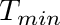
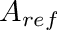
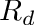
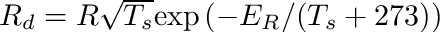
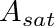
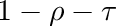
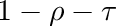
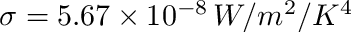

This model simulates the transport of water and other constituents in the soil. Water transport is based on a numerical solution of the Richards equation (Richards; 1931), which yeilds the pressure head at various soil depths for each soil primitive.
The Richards equation is given by
![\[ \frac{\partial \theta}{\partial h}\frac{\partial h}{\partial t} = \frac{\partial}{\partial z}\left[ K\left(\frac{\partial h}{\partial z}+1\right)\right] + S, \]](form_119.png)
where  is the soil volumetric water content (m3 water per m3 soil),
is the soil volumetric water content (m3 water per m3 soil),  is the water pressure head (m of water),
is the water pressure head (m of water),  is the hydraulic conductivity ( m3 water per m2 soil surface per second),
is the hydraulic conductivity ( m3 water per m2 soil surface per second),  is a generic source/sink (+/-) term (m3 water per m3 soil per second),
is a generic source/sink (+/-) term (m3 water per m3 soil per second),  is time, and
is time, and  is the vertical coordinate.
is the vertical coordinate.
The flux of water at any height [m3 water per m2 ground per second] is given by Darcy's law

where we have taken the convention that a positive flux corresponds to upward movement of water.
The soil moisture characteristic  and the hydraulic conductivity are specific for the type of soil. In this model implementation, the empirical relations of van Genuchten (1980) are used. van Genuchten related the soil volumetric water content ( ) to the hydraulic head ( ) as
![\[ \theta = \theta_r + \frac{\theta_s-\theta_r}{\left[1+\left(\alpha\big| h\big|\right)^n\right]^m} \]](form_126.png)
 and  are the residual and saturated soil volumetric water content, respectively. These values are typically known directly from the  curve: is the asymptotic value of as
curve: is the asymptotic value of as  , and is the asymptotic value of as
, and is the asymptotic value of as  . The coefficients
. The coefficients  ,
,  , and
, and  are empirical parameters, which can be found by fitting the above equation for to data describing vs. . This equation can be differentiated with respect to to give
are empirical parameters, which can be found by fitting the above equation for to data describing vs. . This equation can be differentiated with respect to to give

van Genuchten used this expression to derive an equation describing the variation of hydraulic conductivity with water content
![\[ K = K_s\left\{ \frac{ \left[ 1-(\alpha \big| h\big|)^{n-1}\left[1+(\alpha \big| h\big|)^{n}\right]^{-m}\right]^2 }{\left[1+(\alpha \big| h\big|)^{n}\right]^{m/2}}\right\} \]](form_136.png)
subject to the constraint  , where
, where  is the soil hydraulic conductivity at saturation (m3 water per m2 soil surface per second).
is the soil hydraulic conductivity at saturation (m3 water per m2 soil surface per second).
The measured vs. curve can be used to determine the empirical soil parameters (see figure below). and can be read directly from the figure, since they are the bounds of the vs. curve. A best-fit can determine the coefficients , , and .

| Parameter | Units | Description |
|---|---|---|
| m3 water per m3 soil | Residual volumetric water content (i.e., when ) | |
| m3 water per m3 soil | Volumetric water content at saturation (i.e., when ) | |
| | m3 water per m3 soil | Hydraulic conductivity at saturation (i.e., when ) |
 | unitless | van Genuchten empirical parameters |
The Crank-Nicolson scheme is used to discretize the Richards equation in time, which is unconditionally stable. Spatial derivatives are discretized using a second-order accurate centered scheme. Applying this scheme to the Richards equation gives
![\[ -\left[\frac{K_k^n}{2(\Delta z)^2}+\frac{(dK/dz)^n_k}{4\Delta z}\right]h_{k+1}^{n+1}+\left[ \frac{C_r}{\Delta t}+\frac{K_k^n}{(\Delta z)^2}\right]h_k^{n+1}-\left[\frac{K_k^n}{2(\Delta z)^2}-\frac{(dK/dz)^n_k}{4\Delta z}\right]h_{k-1}^{n+1}=\frac{C_r}{\Delta t}h_k^n+\frac{K_k^n}{2(\Delta z)^2}\left(h_{k+1}^n-2h_k^n+h_{k-1}^n\right)+\left[\left(\frac{h^n_{k+1}-h^n_{k-1}}{4\Delta z}\right)+1\right]\left(\frac{dK}{dz}\right)^n_k+S_k^n, \]](form_140.png)
where
![\[ \frac{dK}{dz}=\frac{K_{k+1}-K_{k-1}}{2\Delta z}, \]](form_141.png)
is the soil moisture characteristic, superscript is an evaluation at time and  is an evaluation at time . The the above equation corresponst to a tridiagonal linear system of equations of the form
is an evaluation at time . The the above equation corresponst to a tridiagonal linear system of equations of the form  , which can be inverted to solve for at every level. To see a derivation of the discrete equations click here.
, which can be inverted to solve for at every level. To see a derivation of the discrete equations click here.
The upper boundary is specified by a constant moisture flux  (m3 water per m2 soil surface per second), which is specified by a second-order upwind discretization of Darcy's law
(m3 water per m2 soil surface per second), which is specified by a second-order upwind discretization of Darcy's law
![\[ h_1 = -\frac{1}{3}h_3+\frac{4}{3}h_2+\frac{2\Delta z}{3K_1}q_s. \]](form_146.png)
The lower boundary is typically specified as saturated (i.e., ), but it could also be specified as constant flux /f$q_b$/f similar to above

To see a derivation of the discrete boundary conditions click here.
| Package | Version | Link | apt-get command | homebrew command |
|---|---|---|---|---|
| NVIDIA CUDA | 5.0+ | developer.nvidia.com/cuda-zone | $ sudo apt-get install cuda | $ brew install Caskroom/cask/cuda |
| Variable | Description | Default behavior |
|---|---|---|
| moisture_flux | Volumetric flux of moisture (water) at the primitive surface [m3 water / m2 surface - sec] | Initialized to default of 0 |
| Property | Description | Default behavior |
|---|
| Variable | Description |
|---|---|
| volumetric_water_content | Surface volumetric water content [m3 water / m3 soil] |
| pressure_head | Surface water pressure head [m water] |
 1.8.13
1.8.13